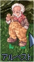
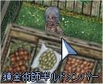
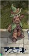
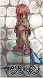
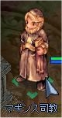

画像にリンクがはってあるものは、クリックすると別窓で大きめサイズが表示されます。
[ゼティ]
所在地；アーチャー協会（フェイヨン弓手町）建物内 |
  |
[レイデン・カルス]
所在地；フェイヨン弓手町内 |
[アルペスト]
所在地；フェイヨン弓手町内 |
|  |
[マスター・カバック]
所在地；フェイヨン弓手町建物内 |
 |
[シズノ]
所在地；フェイヨン弓手町内 |
   |
[マープ]
所在地；ミョルニール山脈11（mjolnir_11） |
   |
[錬金術師ギルドメンバー]
所在地；フェイヨン弓手町内 |
|  |
[アステル]
所在地；プロンテラ(126,335) |
|  |
[マジシャン]
所在地；プロンテラ握手像左上(prontera:144,301) |
|  |
[新生ギルドマスター]
所在地；プロンテラ握手像右(prontera:167,281) |
   |
[大臣]
所在地；プロンテラ城内(76,165) |
 |
[プラ神父]
所在地；プロンテラ大聖堂内(prt_church:179,15) |
   |
[マギンス司教]
所在地；カピトーリナ修道院建物内(monk_in:19,43) |
 |
back
(c) Gravity Co., Ltd. & Lee MyoungJin(studio DTDS). All rights reserved.
(c) GungHo Online Entertainment, Inc. All Rights Reserved.
当コンテンツの再利用（再転載・配布など）は、禁止しています。